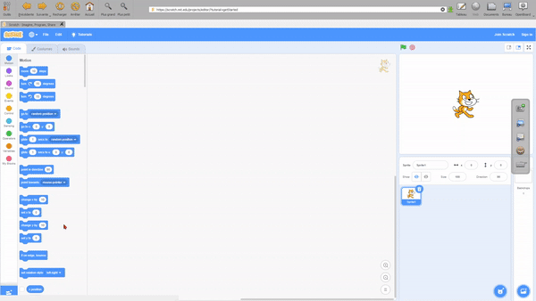

Integrirani preglednik
THE Nacin Web je interni preglednik za OpenBoard koji dodaje pregledniku klasične, vrlo praktične značajke za učionicu.
Omogućuje vam pregledavanje interneta bez napuštanja OpenBoard, za snimanje sadržaja (djelomičnog ili preko cijelog zaslona) i čak stvarati aplikacije s web stranica za ponovno koristiti u svojim dokumentima.

Napravite aplikaciju sa stranice
S bilo kojeg mjesta možete generirati a primjena dodati ga na ploči i komunicirati s njim kao sa zadanim aplikacijama.
Idite na željenu stranicu, kliknite na
 zatim potvrdite odabirom Napravite aplikaciju.
zatim potvrdite odabirom Napravite aplikaciju.

Jednom kreirana aplikacija se automatski sprema u knjižnica OpenBoard. Naći ćete ga ispod Aplikacije > Web i može ga ponovno koristiti u bilo kojem dokumentu.

Koristite vanjski preglednik
Možete izabrati da otvorite veze u a vanjski preglednik provjerom
odgovarajuću opciju u postavkama. Kliknite na
 će zatim pokrenuti vaš omiljeni preglednik kao Nacin Radna Povrsina.
će zatim pokrenuti vaš omiljeni preglednik kao Nacin Radna Povrsina.